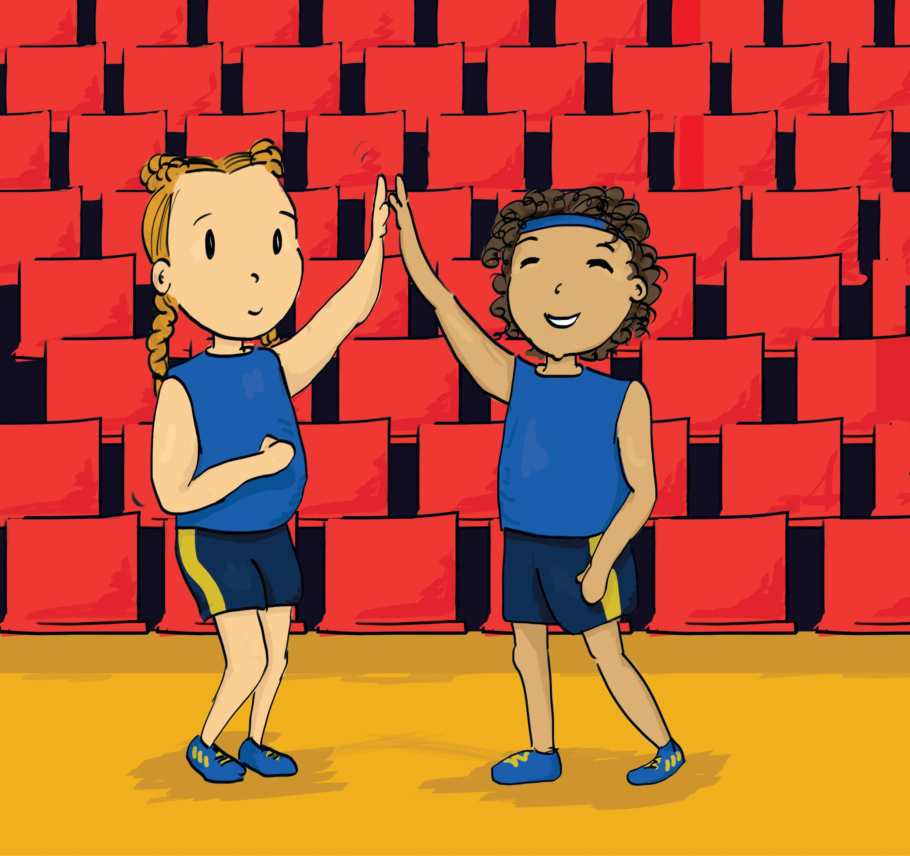

A través de la resolución de problemas y uso del lenguaje en estadística
Pablo Beltrán-Pellicer
@pbeltranp
CPI Val de la Atalaya y Universidad de Zaragoza
XI Escuela de Educación Miguel De Guzmán (2020)
Enseñar Matemáticas para una ciudadanía digital

13-26 de julio de 2020


¿Qué esto de los WODB?

Todo comienza con el libro:
Danielson, C. (2016). Which One Doesn’t Belong. Portland, Maine: Stenhouse.
Desde entonces, el uso de este recurso se ha popularizado y ha aparecido una web especializada en esto:
Vamos a pensar un poquito
¿Cuál crees que es el que no encaja?

No hagas trampa y no continúes hasta que hayas pensado algo
- ¿El 43 porque es el único primo?
- ¿El 16 porque es múltiplo de 4?
- ¿El 43 porque no es un cuadrado perfecto?
- ¿El 9 porque la suma de sus cifras no es 7?
- ¿El 9 porque solo tiene una cifra?
- Etc.
- Siempre hay al menos una razón para hacer único a cada elemento.
Un ejemplo de charla de “aula”
En clase, lo que suele hacerse es proyectar el WODB y:
- Si se tiene pizarra digital, se escriben las razones que van aportando sobre el mismo.
- Si no se tiene PDI, entonces se traza una cruz grande en la pizarra para anotar lo que dice el alumnado para cada uno de los elementos.

Aquí tenéis un vídeo que he grabado con dos niños, de 7 y 9 años, hablando sobre ese WODB de geometría.
Un ejemplo de probabilidad


Esto es solo un ejemplo. Un mismo WODB, como este, puede proponerse desde infantil hasta bachillerato, y el vocabulario y argumentos empleados varían enormemente.
Un homenaje a los materiales de los 90
Durante los 90 se editaron excelentes materiales didácticos, algunos desde las consejerías de educación, que buscaban la renovación pedagógica. Más que tratarse de libros de texto al uso, contenían una secuencia de actividades adaptable, junto con una justificación para los docentes, a quienes trataban como profesionales.

Un ejemplo lo tenemos en la Guía Praxis, coordinada por Carmen Azcárate y Jordi Deulofeu, de donde se ha seleccionado y adaptado la actividad que vamos a comentar (los autores del bloque de estadística fueron Francesc Borrell Thió, Anna Pol Masjoan y Elisabet Saguer Canadell).
Hay que tomar una decisión
Partido de basket. Queda un minuto y el entrenador tiene que decidir a qué jugadora sacar. ¿A quién elegirá?

- Si va perdiendo de 8 puntos.
- Si va ganando de 2 puntos.
¿Qué datos tenemos?

- La decisión debe tomarse considerando los datos disponibles.
- ¿Sacamos al mismo tipo de jugadora cuando vamos ganando por poco que cuando el partido está prácticamente perdido, pero con alguna posibilidad de ganar?

Porcentaje de aciertos de tiro exterior de cinco jugadoras durante los últimos diez partidos
¿Qué pasa con este gráfico?
El New York Times lleva colaborando desde 2017 con la American Statistical Association para ofrecer la sección What’s Going On in This Graph

Semanalmente, de septiembre a mayo, proponen un gráfico sobre un tema de actualidad, con el objetivo de facilitar la siguiente discusión, cuyas preguntas han de abordarse en orden.
- ¿Qué observas? Si haces una observación, tienes que decir de dónde viene.
- ¿Qué te preguntas? De lo que has observado en el gráfico, ¿qué te produce curiosidad?
- ¿Qué pasa con este gráfico? Redacta un titular con gancho que capture la idea principal del gráfico.
¿Qué pasa con este gráfico? (3)
Un ejemplo. Antes del confinamiento de 2020 por COVID-19, tuvimos ocasión de discutir este gráfico en clase. Antes de seguir, piensa ¿qué observas?, ¿qué te preguntas? y ¿qué titular le pondrías?

Imagen: NY Times
Gráficos que se revelan lentamente (2)
¿Qué observas? Intenta ir contestando mentalmente a las preguntas.

Fuente del gráfico original: @picanumeros
Gráficos que se revelan lentamente (4)
¿Y ahora?

Gráficos que se revelan lentamente (5)
¿Qué observas? ¿Qué te preguntas?

Gráficos que se revelan lentamente (6)
¿Y el resto de colores? ¿Qué pueden significar? ¿Intuimos qué puede estar mostrando este gráfico?

Gráficos que se revelan lentamente (8)
¿Podemos decir ya qué nos está mostrando el gráfico?